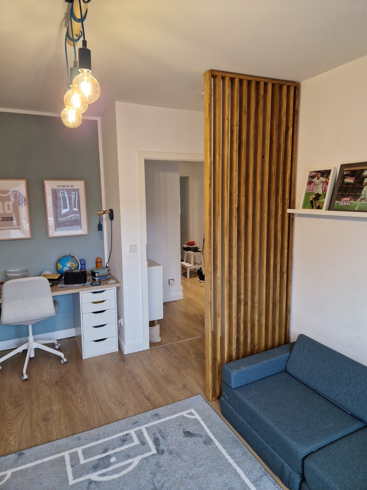
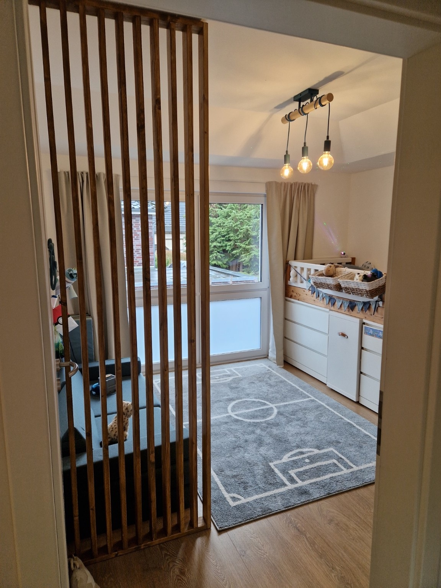

Sitzbank mit Stauraum
Sitzbank mit Stauraum
Aus einem offenen Essbereich entstand ein gemütlicher zentraler Ort im Haus – mit integrierter Sitzbank, viel Stauraum, warmem Holz, versteckter Technik und indirekter Beleuchtung.
Individuelle Lösungen für Räume, Möbel und Außenbereiche in Hamburg.
Mehr erfahrenSeit vielen Jahren entstehen hier DIY-Projekte rund ums Haus – mit Blick für Gestaltung, Funktion und bezahlbare Lösungen. Im Mittelpunkt stehen Räume, die besser funktionieren, wohnlicher wirken und im Alltag wirklich genutzt werden.
Drei Projekte, die zeigen, wie Wohnlichkeit, Struktur und Alltagstauglichkeit zusammenkommen.
Sitzbank mit Stauraum
Aus einem offenen Essbereich entstand ein gemütlicher zentraler Ort im Haus – mit integrierter Sitzbank, viel Stauraum, warmem Holz, versteckter Technik und indirekter Beleuchtung.

 Vorher
Nachher
Vorher
Nachher
Hauswirtschaftsraum mit System
Offene Regale, Unruhe und wenig Platz wurden durch eine klare, geschlossene Schranklösung ersetzt. Der Raum wirkt jetzt ruhig, aufgeräumt und deutlich hochwertiger – bei gleicher Fläche.

 Vorher
Nachher
Vorher
Nachher
Von schlicht zu hochwertig: Akzentwand, indirektes Licht und klare Symmetrie schaffen eine ruhige, warme Atmosphäre.
Eine kompakte Auswahl, die Stimmung, Material und Raumwirkung zeigt.



 Vorher
Nachher
Vorher
Nachher
Aus einem schlichten Standardmöbel wurde durch Holz, Licht und klare Details ein deutlich hochwertigeres Element im Raum.

 Vorher
Nachher
Vorher
Nachher
Aus einer alten, unruhigen Fläche wurde ein stimmungsvoller Außenbereich mit Holzoptik, Licht und klarer Struktur.
Licht, versteckte Technik, Stauraum und der Materialmix aus Holz, Grau, Weiß und Salbei.
Licht
Indirektes Licht schafft Tiefe und eine zeitlose Stimmung.
Technik
Steckdosen, Ladezonen und Kabelmanagement werden bewusst unsichtbar geplant.
Stauraum
Mehr Platz entsteht durch durchdachte Einbauten statt zusätzlicher Möbel.
Materialmix
Holz, Grau, Weiß und Salbei wirken gemeinsam warm und hochwertig.
Ich bin kein gelernter Handwerker. Alles ist über Jahre aus eigenen Projekten entstanden – mit Neugier, Liebe zum Detail und dem Wunsch, Räume schöner, praktischer und bezahlbarer zu lösen.
Dieses Portfolio ist privat geteilt. Wenn Sie einen Austausch wünschen, schreiben Sie bitte eine kurze Nachricht.